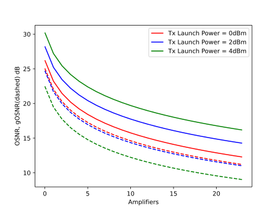
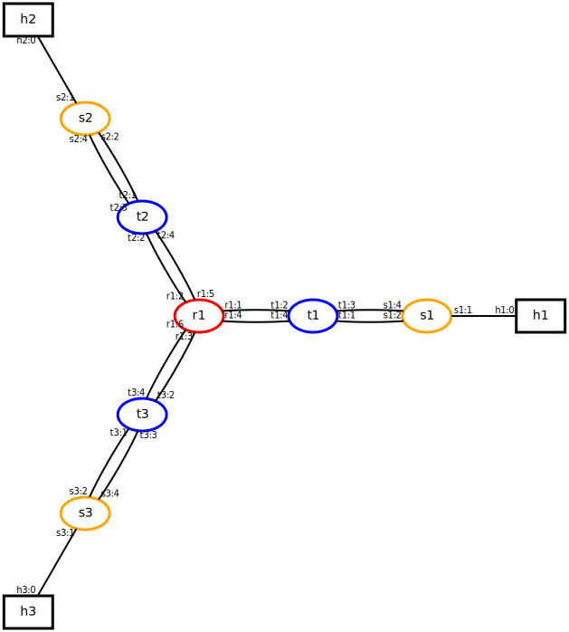

Tutorial¶
Mininet-Optical can be used in either pure simulation mode, without a packet-optical dataplane and external control plane, or in full emulation mode, with a usable packet-optical dataplane and external SDN control plane.
The Simulation Tutorial explains how to use Mininet-Optical in pure simulation mode, while the Emulation Tutorial explains how to use Mininet-Optical in full emulation mode.
Simulation Mode Tutorial¶
Mininet-Optical’s simulation mode is useful when you just want to simulate optical transmissions and don’t need to send actual data through your network, model packet devices, or use an external SDN controller.
You may find it to be convenient due to its fast startup and ease of use in an IDE such as Pycharm. Since it doesn’t create virtual network devices in Linux it does not require root privileges to run.
After completing these exercises you will learn how to :
add nodes and links to a network model.
install switch rules to the ROADM nodes.
simulate optical transmissions.
model a ring topology.
Notes:
For exercises 1 and 2 you will need the tests/tutorial.py script.
You will be generating another script labeled: three_ring_topology.py for exercise 3.
Hints:
If you get stuck with exercises 1 and 2, please refer to tests/monitoring_gosnr_vs_power.py for hints.
If you get stuck with exercise 3, please refer to tests/ringtest.py
Bear in mind that neither of these scripts is the answer to the exercises!
Exercise 1. Add an extra LineTerminal and a ROADM node to the linear topology (position indistinct, i.e., could be at the beginning, middle or end of the topology), install the appropriate switch rules that will enable the transmission of channels 1, 2 and 3 from LT1 —> LT6.
Exercise 2. Following ex. 1), monitor the OSNR and the gOSNR levels of channel 2 at the output interface of every EDFA in the linear topology (TX: LT1; RX: LT6). For the transmission, use launch power levels: 0, 2 and 4 dBm.
If motivated enough, try to plot the sequence.
Exercise 3. Create a ring topology with 3 ROADM nodes, transmit channels 1, 2, 3 as follows:
channel 1 is transmitted by LT1 and is received at LT2.
channels 2 and 3 are transmitted by LT2 and are received at LT1.
Try and rearrange the transmission of channels to create loops. Is the system catching them?
POSSIBLE OUTPUTS FROM THE EXERCISES:
Exercise 2.
*** Monitoring channel with index: 2
*** Building Linear network topology for operational power: 0
*** Monitoring interfaces
*** Destroying objects
*** Building Linear network topology for operational power: 2
*** Monitoring interfaces
*** Destroying objects
*** Building Linear network topology for operational power: 4
*** Monitoring interfaces
*** Destroying objects
The OSNR of Channel 2 at every EDFA location for launch power 4.00 dBm:
[31.502684964557986, 28.176061337796398, 26.314628272797336,
25.015839898466922, 24.13611249709385, 23.304363233906848,
22.60659223643803, 22.00556583390794, 21.543462282662198,
21.06605464395392, 20.635968107119602, 20.244661874079043,
19.931195226498627, 19.596307147424525, 19.28540409149395,
18.99527882336643, 18.758083090421028, 18.50016560987458,
18.25671038540936, 18.026181282510155]
The OSNR of Channel 2 at every EDFA location for launch power 2.00 dBm:
[33.50268137427075, 30.176059668755695, 28.31462718556177,
27.01583909226315, 26.13611183872073, 25.304362690284655,
24.606591773502963, 24.00556543080363, 23.543461920246425,
23.06605431926585, 22.635967813044893, 22.244661605342294,
21.931194976475382, 21.596306915956195, 21.285403876016776,
20.995278621813668, 20.75808289958113, 20.500165430038248,
20.25671021537687, 20.026181121267854]
The OSNR of Channel 2 at every EDFA location for launch power 0.00 dBm:
[35.502675684055035, 32.176057023505756, 30.314625462410078,
29.01583781451658, 28.13611079526985, 27.304361828701694,
26.60659103980043, 26.00556479192643, 25.543461345856198,
25.06605380467, 24.635967346967934, 24.244661179423296,
23.931194580215273, 23.596306549103637, 23.285403534508482,
22.99527830237409, 22.758082597120293, 22.500165145016886,
22.256709945893554, 22.026180865716036]
Plotting the values:

Emulation Tutorial¶
Mininet-Optical’s full emulation mode supports sending data through the emulated network, supports modeling of packet devices as well as optical devices, and supports external SDN control of both packet and optical network elements.
Since emulation mode relies on Mininet (and Linux) to create
virtual network devices, it currently needs to run with root
privileges, and Python scripts are typically run using sudo.
For this exercise, you are going to modify the singleroadm.py script
to add additional transceivers and links, and then you are going to
configure the terminals (t1, t2, t3) and ROADM to enable
connectivity between all of the packet switches and hosts.
Part 0: Make sure singleroadm.py works correctly¶
First, make sure you can run singleroadm.py.
For example, you should be able to do something like this:
$ sudo examples/simplelink.py
(or if that doesn’t work, sudo PYTHONPATH=. python3 examples/simplelink.py)
*** Creating network
*** Adding controller
*** Adding hosts:
h1 h2
*** Adding switches:
t1 t2
*** Adding links:
(h1, t1) (h2, t2) (t1, t2)
*** Configuring hosts
h1 h2
*** Starting controller
c0
*** Starting 2 switches
t1 t2 ...
...
mininet-optical>
Then open up another terminal window on your VM (or machine where
mininet is running) and run the controller script, which will program
the ROADM to enable h1 to talk to h2 (but not h3!)
$ cd ~/mininet-optical/
$ examples/config-singleroadm.sh
You should be able to see the REST calls that config-singleroadm.sh is
making as well as OK results to indicate they have succeeded. You should
also see monitoring data reported by the REST monitoring calls. The
ability to monitor power and OSNR is essential to SDN control of optical
networks.
In the Mininet window, you should see a number of successful signal
receptions. The osnr command should show signals received at t1 and
t2 but not t3.
mininet-optical> osnr
<name: t1-monitor, component: t1, mode: in>:
<ch1:191.35THz> OSNR: 34.70 dB gOSNR: 34.58 dB
<name: t2-monitor, component: t2, mode: in>:
<ch1:191.35THz> OSNR: 34.70 dB gOSNR: 34.58 dB
<name: t3-monitor, component: t3, mode: in>:
If you run the pingall command, you will see that h1 and h2 can
talk to each other, but h3 cannot communicate with either h1 or
h2:
mininet-optical> pingall
*** Ping: testing ping reachability
h1 -> h2 X
h2 -> h1 X
h3 -> X X
*** Results: 66% dropped (2/6 received)
Note it is also possible to program this “y” topology so that h1
can talk to h2 or h3, but not both at the same time!
In the next part of this exercise, you are going to modify the network topology by adding additional transceivers and links, and then you are going to program it to enable all of the endpoints to communicate.
For now, exit out of mininet-optical by using exit or control-D:
mininet-optical> exit
*** Stopping 1 controllers
c0
*** Stopping 9 links
.........
*** Stopping 7 switches
r1 s1 s2 s3 t1 t2 t3
*** Stopping 3 hosts
h1 h2 h3
*** Done
Important Note: Bidirectional Emulator API¶
Although the underlying simulation API is unidirectional, the links, devices, and API that we will be using for this emulation tutorial are bidirectional! This usually means that establishing a path in one direction will establish a return path in the opposite direction, on the same channel. With this API there is no way to select different send/receive paths or channels. Links are bidirectional and establish a set of fiber spans and amplifiers going in each direction. This approach simplifies topology specification as well as SDN control, and is well suited to this tutorial, but in our demo we will want more flexibility to model a unidirectional hardware network (this work is currently in progress.)
Part 1: Add transceivers and links¶
The API Overview explains the simplelink.py script and the
basics of the Mininet-Optical topology API in emulation mode.
For this part, you will need to figure out how to add an additional transceiver to each terminal, as well as an additional link from each terminal to the ROADM.
In order for your SDN control plane (which for this exercise will
probably be a simple configuration script similar to
examples/config-singleroadm.sh) to operate properly, you will need to
know which ports are connected on each device. You can specify the port
numbers in the parameters of the addLink() method.
When you are done, there should be two 50km links from t1<->r1, two
50km links from t2<->r1, and two 1m links from t3<->r1.
You can check your topology from the mininet-optical> prompt using the
net command. When you are done with this part, it should look something
like this:
mininet-optical> net
h1 h1-eth0:s1-eth1
h2 h2-eth0:s2-eth1
h3 h3-eth0:s3-eth1
r1 lo: r1-wdm1:t1-wdm1 r1-wdm2:t1-wdm2 r1-wdm3:t2-wdm1 r1-wdm4:t2-wdm2
r1-wdm5:t3-wdm1 r1-wdm6:t3-wdm2
s1 lo: s1-eth1:h1-eth0 s1-eth2:t1-eth3 s1-eth3:t1-eth4
s2 lo: s2-eth1:h2-eth0 s2-eth2:t2-eth3 s2-eth3:t2-eth4
s3 lo: s3-eth1:h3-eth0 s3-eth2:t3-eth3 s3-eth3:t3-eth4
t1 lo: t1-wdm1:r1-wdm1 t1-wdm2:r1-wdm2 t1-eth3:s1-eth2 t1-eth4:s1-eth3
t2 lo: t2-wdm1:r1-wdm3 t2-wdm2:r1-wdm4 t2-eth3:s2-eth2 t2-eth4:s2-eth3
t3 lo: t3-wdm1:r1-wdm5 t3-wdm2:r1-wdm6 t3-eth3:s3-eth2 t3-eth4:s3-eth3
c0
t1-monitor
t2-monitor
t3-monitor
Don’t dismiss this as incomprehensible garbage – it is actually
telling you useful information! Specifically, it is telling you how each
node’s interfaces are connected. For example, you can see that ROADM r1
now has two links to each of the terminals t1-t3, for a total of 6
links. You can also see the type of the port (Ethernet or WDM) as well
as the port number. For example, r1-wdm1 is WDM port 1 on ROADM r1.
You can also use the spans command, which prints out long links but
ignores links of <100m. So, you should see the links from t1 and
t3 but not t2:
mininet-optical> spans
(r1->t1) <boost 18.0dB> <1 25.0km> <r1-t1-amp1 5.5dB> <2
25.0km> <r1-t1-amp2 5.5dB>
(r1->t1) <boost 18.0dB> <5 25.0km> <r1-t1-amp1 5.5dB> <6
25.0km> <r1-t1-amp2 5.5dB>
(r1->t3) <boost 18.0dB> <13 25.0km> <r1-t3-amp1 5.5dB> <14
25.0km> <r1-t3-amp2 5.5dB>
(r1->t3) <boost 18.0dB> <17 25.0km> <r1-t3-amp1 5.5dB> <18
25.0km> <r1-t3-amp2 5.5dB>
(t1->r1) <3 25.0km> <t1-r1-amp1 5.5dB> <4 25.0km> <t1-r1-amp2
5.5dB>
(t1->r1) <7 25.0km> <t1-r1-amp1 5.5dB> <8 25.0km> <t1-r1-amp2
5.5dB>
(t3->r1) <15 25.0km> <t3-r1-amp1 5.5dB> <16 25.0km> <t3-r1-amp2
5.5dB>
(t3->r1) <19 25.0km> <t3-r1-amp1 5.5dB> <20 25.0km> <t3-r1-amp2
5.5dB>
Note that the spans command shows the underlying physical spans (modeled by the simulator) which are unidirectional. Note that the fiber links don’t have names but they have numbers in order to disambiguate them.
You may also wish to try the intfs and ports commands.
If you have installed pygraphviz (e.g. via make depend and/or
using sudo apt install python3-pygraphviz), you can use the
plotNet() function in singleroadm.py to save a plot of the topology to
singleroadm.png. Your revised topology should look something like
this:

Note that there are two links (each of which is bidirectional,
implemented as two sequences of fiber spans and amplifiers, going in
opposite directions) from each packet switch (s1) to its respective
Terminal (t1) and to the ROADM. You can also see the port numbers for
each side of each link. You may find this to be the easiest way to
understand your network at a glance and to identify port numbers for the
next part.
Part 2: Programming the Data Plane¶
Lastly, we need to program the data plane so that we have full
connectivity. In order to do this, all we need to do is enable
connectivity between two pairs of Terminals, such as (t1, t2) and
(t2, t3).
Question to think about: Why is connecting two pairs of terminals sufficient to connect all of the hosts?
In fact, you do not actually want to create a loop among the packet
switches. Since we are using OVSBridge without spanning tree enabled,
creating a loop typically leads to undesirable behavior where packets
loop forever, usually rendering the network unusable or extremely slow
(the problem is exacerbated by flooding and by broadcast packets for ARP
and DHCP.) This is a common error in L2 Ethernet networks that is
frequently seen by Mininet users who (often) think it is an emulator bug
rather than realistic (but incorrectly configured) behavior!
You should be able to use the REST calls described in the tutorial,
and/or modify the existing singleroadm.sh script to program your
network.
When you are done, you should see a number of successful signal connections at the terminals:
mininet-optical> signals
r1 Inputs:
{1: [(<ch1:191.35THz>, 140362746465920)], 2: [(<ch2:191.40THz>,
140362746465728)], 3: [(<ch1:191.35THz>, 140362746797456)], 4:
[(<ch2:191.40THz>, 140362746797360)], 5: [(<ch1:191.35THz>,
140362746797312)], 6: [(<ch2:191.40THz>, 140362746794720)]}
r1 Outputs:
{1: [(<ch1:191.35THz>, 140362746797456)], 2: [(<ch2:191.40THz>,
140362746794720)], 3: [(<ch1:191.35THz>, 140362746465920)], 4:
[], 5: [], 6: [(<ch2:191.40THz>, 140362746465728)], None:
[(<ch1:191.35THz>, 140362746465920), (<ch2:191.40THz>,
140362746465728), (<ch1:191.35THz>, 140362746797456),
(<ch2:191.40THz>, 140362746794720)]}
t1 Inputs:
{1: [(<ch1:191.35THz>, 140362746797456), (<ch1:191.35THz>,
140362746797456)], 2: [(<ch2:191.40THz>, 140362746794720)], -1:
[(<ch1:191.35THz>, 140362746465920), (<ch2:191.40THz>,
140362746465728)]}
t1 Outputs:
{1: [(<ch1:191.35THz>, <ch1:191.35THz>)], 2: [(<ch2:191.40THz>,
<ch2:191.40THz>)]}
t2 Inputs:
{1: [(<ch1:191.35THz>, 140362746465920)], 2: [], -1:
[(<ch1:191.35THz>, 140362746797456), (<ch2:191.40THz>,
140362746797360)]}
t2 Outputs:
{1: [(<ch1:191.35THz>, <ch1:191.35THz>)], 2: [(<ch2:191.40THz>,
<ch2:191.40THz>)]}
t3 Inputs:
{1: [], 2: [(<ch2:191.40THz>, 140362746465728)], -1:
[(<ch1:191.35THz>, 140362746797312), (<ch2:191.40THz>,
140362746794720)]}
t3 Outputs:
{1: [(<ch1:191.35THz>, <ch1:191.35THz>)], 2: [(<ch2:191.40THz>,
<ch2:191.40THz>)]}
(Note: You should also see osnr at all of them, but for some reason that
doesn’t seem to be working properly at the moment. In my tests, it only
reports osnr for t1 and t2:)
mininet-optical> osnr
<name: t1-monitor, component: t1, mode: in>:
<ch1:191.35THz> OSNR: 34.05 dB gOSNR: 15.99 dB
<name: t2-monitor, component: t2, mode: in>:
<ch1:191.35THz> OSNR: 34.11 dB gOSNR: 34.11 dB
<name: t3-monitor, component: t3, mode: in>:
You should also be able to monitor the OSNR remotely using REST calls:
*** Monitoring signals at endpoints
* t1
{"osnr": {"1": {"freq": 191350000000000.0, "osnr":
34.04688966097812, "gosnr": 15.985167480783709, "power":
63.095734448019336, "ase": 0.02484912117567492, "nli":
4.00759355581639}}}* t2
{"osnr": {"1": {"freq": 191350000000000.0, "osnr":
34.11343356995615, "gosnr": 34.11227284182009, "power":
0.9999493444109917, "ase": 0.00038782396576497437, "nli":
2.653865120449501e-07}}}* t3
{"osnr": {}}
(Hopefully we will be able to determine why there is no OSNR reported for
t3.)
This concludes the exercise!!
Thanks for trying this out – we look forward to your feedback.
Hints and Advice¶
Read the API Overview
This provides an overview of Mininet-Optical’s Python API as well as the REST control API.
Pay attention to port numbers
It’s tricky (if not maddeningly so) to get this (and many SDN designs) working because you need to know the exact port numbers. You may wish to try things like:
Plotting (e.g. using
plotNet()) and printing out (or drawing) the topology and port numbersWriting a helper function to help you determine port numbers, for example telling you what is (or should be) connected at the other side of a particular node and port number, or telling you what
ROADMport should correspond to whatTerminalport for a givenTerminaland transceiver, or even just dumping out what each node and port number is connected to.Possibly using
net.linksBetween(node1, node2), which returns all of the links (as link objects) between two nodes in the Mininet network. A link’s endpoints arelink.intf1andlink.intf2.Logging port numbers/names to make sure they are what you think they are
Testing REST calls using
curlREST calls can easily be executed and tested from the shell prompt using
curl, but remember to enclose the URLs in quotes to avoid the shell (mis)interpreting special characters like &. Note that shell variables ($url) should be enclosed in double quotes (not single quotes!) in order to be dereferenced.Making mistakes is OK in an emulator, but be careful with hardware
Fortunately, if you make mistakes on a software emulator it has few negative consequences, but mistakes in a hardware optical network, such as creating an amplified laser feedback loop, could potentially have disastrous consequences resulting in damaged devices at the very least! Ideally devices will have failsafe mechanisms but this may not be guaranteed.
Creating packet loops in Ethernet networks doesn’t usually cause fires but usually results in an unusable network.
Extra Credit for the Insanely Motivated¶
This is almost certainly more than enough for now, but here are some (extremely optional) additional projects you could think about trying if you are excessively enthusiastic and have lots of extra time:
Try passing
switch=functools.partial(OVSBridge,stp=True)into theMininet()constructor call (you will need toimport functools) to turn on spanning tree. Note that it can take a while (~30s) for spanning tree to do its thing (specifically discover any loops and block ports that create loops) but eventually you should be able to ping everything. Now, try creating a full mesh/loop topology where every terminal can connect to every other terminal. Verify that spanning tree enables your (bridged L2 Ethernet) network to work even in the presence of loops.As an alternative to spanning tree, you could also use a packet SDN controller such as ONOS that supports Ethernet topologies with loops.
Create a ring network similar to the network from Part 1. See if you can replicate the same (or similar) behavior. Note that the emulator API that we are using for this tutorial is bidirectional, so ROADM rules (for example) create paths in both directions. Compare the OSNR and gOSNR values from simulation and emulation (they should match if the paths are the same!)
Try using the fakecontroller.py framework to (re)write your controller script in Python.
Create a 3x3 grid/mesh network of 9 POPs (Points Of Presence, i.e. uplink/downlink locations) with 9 transceivers per Terminal in each POP. Use Manhattan routing to enable full mesh connectivity without creating loops and while minimizing the number of signals per link. Since this is an L2 Ethernet network, the connectivity among your packet switches (Ethernet bridges) should be a tree, or you should turn on spanning tree protocol for
OVSBridgeas described in (1) above.Take a look at
LinearRoadmTopoandDemoTopoinofcdemo/demolib.pyas well as the scripts that use them, simpledemo.py and demo.py, and the apsp.py test controller. Unlike our simple exercises above, these install IP routing rules (programmed with OpenFlow) as well as multiple subnets to enable mesh connectivity. Can you create a mesh network with multiple subnets and a controller that implements a more advanced lightpath planning and routing algorithm?Note that
ofcdemo.demolib.configureLinearNet()also uses OpenFlow to set up IP routing rules. Alternately, you could use Mininet’sLinuxRouterand install rules in the routers using Linux routing commands.Try creating a simplified text format to describe a topology**,** and then create a
build()method that reads your description format and makes the appropriate calls to create the topology.For example, the following format could be used to specify something like our simple linear network:
h1 -- s1 -- t1 --25km- amp1 --25km-- t2 -- s2 -- h2
and this format could be used to specify a single ROADM network:
h1 -- s1 -- t1 --25km- r1 --25km-- t2 -- s2 -- h1 r1 -- t3 -- s3 - h3
You could also use another format such as dot, or anything you like.
Some questions to think about:
a. How do you know the device type of a node in this specification?
b. How do you know whether a link is a packet link or an optical link?
c. How are the port numbers assigned?
d. How do we handle the other optical network device parameters? Can we choose reasonable defaults? If so, what should they be? Can we configure them in the controller? If so, how?
e. How do you decide how many transceivers are included in a terminal?
f. What are the advantages and disadvantages of specifying your topology in Python or in this simplified text format?